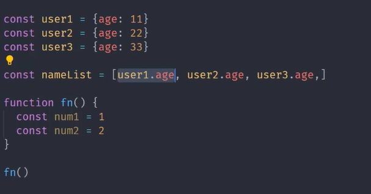

内存管理
垃圾回收与常见GC算法
V8引擎的垃圾回收
Performance工具
代码优化示例
内存管理
内存：由可读写单元组成，表示一片可操作空间
管理：人为的去创操作一片空间的申请、使用和释放
内存管理：开发者主动申请内存空间、使用内存空间、释放内存空间
管理流程：申请-使用-释放
let obj = { } // 申请
obj.name = 'pxr' //使用
obj = null //释放
JavaScript中的垃圾
JavaScript中内存管理是自动的
对象不再被引用时是垃圾
对象不能从根上访问到时是垃圾
JavaScript中的可达对象
可以访问到的对象就是可达对象（引用、作用域链）
可达的标准就是从根出发是否能够被找到
JavaScript中的根就可以理解为全局变量对象
GC算法介绍
GC就是垃圾回收机制的简写。
GC可以找到内存中的垃圾、并释放和回收空间。
如何判断是否是垃圾？
第一种：从程序需求的角度考虑，如果说某一个数据，使用完之后，上下文里面不再用到它，我们就可以把它当做垃圾。
第二种：从程序运行过程中，变量能否被引用到的角度考虑，找不到相应变量的时候，我们就可以把它当做垃圾。
GC算法是什么？
GC是一种机制，它里面的垃圾回收器可以完成具体的回收工作。
而工作的内容就是查找垃圾，释放空间，并且回收空间。
在这个过程中有这几个行为，如何查找垃圾，怎么释放空间，回收空间的过程中如何进行分配。
所以这样一系列的过程里面必然有不同的方式，所以GC算法就可以理解为垃圾回收器在工作过程中所遵循的一些规则，好比数学的计算方式，这个就是对GC算法的定义。
常见的GC算法名称
引用计数： 通过一个数字判断当前一个对象是不是垃圾。
标记清除： 在GC工作的时候去给那些活动对象添加上一个标记，来判断它是否是垃圾
标记整理： 与标记清除类似，来回收的过程中，可以做一些不一样的事情。
分代回收： 在V8中可以用到这样一个机制。
引用计数算法实现原理
核心思想：在内部通过一个引用计数器，来维护当前对象的引用数，从而判断该对象的引用数值是否为0来判断他是不是一个垃圾对象。 当该值为0时，GC就开始工作，将其所在的对象空间进行回收和释放再使用。
引用计数器：相对于其他的GC算法来说，正是引用计数器的存在，导致了引用计数与其他GC算法有所差别。
引用的数值什么是否发生改变？ 当一个对象它的引用关系发生改变的时候，那么引用计数器就会主动修改当前对象的引用数字。
什么是引用数字发生改变？ 代码里面有一个对象空间，有一个变量名指向它，那么这个时候就把数值加1，如果说又多了一个对象 还指向它，那么再加1，如果是减少的情况就减1。当引用数字为0时， GC会立即工作，然后将当前的对象空间进行回收。

user1, user2, user3 不会被回收，因为nameList里面有引用。
fn()里的num1和num2会被回收，因为函数执行完后，从根上找不到num1和num2了。
引用计数算法优缺点
优点
发现垃圾时立即回收
最大限度减少程序卡顿时间
缺点
无法回收循环引用的对象
时间开销大，对于资源消耗比较大
标记清除算法实现原理
核心思想：将整个垃圾回收操作分成两个阶段，标记和清除
标记： 遍历所有对象标记所有活动对象。
清除：遍历所有对对象，对没有标记的对象进行清除，也会把第一阶段设置的标记抹掉，便于GC下次还能正常的工作。
通过两次的遍历行为，把垃圾空间进行回收，最终交给空闲列表进行维护，便于后续代码的使用。

分成两个步骤，在第一个阶段找到所有可达对象，如果说涉及到引用的层次关系，那么会进行递归的进行查找，就像global找A再找D这样一个过程。找完以后将这些可达对象进行标记，标记以后进行第二个阶段，开始做清除，找到那些没有去做标记的对象进行清除，然后把第一阶段进行的标记进行抹除。这样就完成了一次垃圾回收。
标记清除算法的优缺点
优点：
去解决对象循环引用的回收操作。
在函数作用域下面有a1和b1，让他们互相引用。函数调用完之后必然要释放内部的空间。这样当一个函数调用完之后局部空间的变量就失去了与全局作用域上的链接，所以这个时候a1和b1在全局的作用域下就没法被访问到，所以就变成了不可达的对象，不可达对象在做标记阶段的时候就不能完成标记，在第二个阶段就直接找到这些没有标记的对象，把它的内部空间进行释放。虽然在引用计数的算法里也没法再全局作用域当中直接访问这些局部变量，但是根据引用计数的算法，他们的引用计数不为0，所以就没法进行释放。这就是相对于引用计数算法的一个最大优点。
缺点：
会产生空间碎片化的问题，不能让空间最大化的使用。所谓的空间碎片化是指由于当前所回收的垃圾对象在地址上不是连续的，所以在回收之后会分散于各个角落，后续在使用的时候如果新的生成空间刚好与他们的大小匹配，那么久可以正常使用，一旦多了少了的话就不适合使用。这就是标记清除算法的一个缺点。
而且也不能立即回收垃圾对象

标记整理算法原理
标记整理算法可以看做是标记清除的增强操作。
他的第一个标记阶段的操作与标记清除完全一致。都会遍历所有的对象，然后将当前的可达活动对象进行标记。
标记整理会在清除之前会做整理操作，移动对象的位置，能让他们在地址上产生连续。
在内存中不会大批量出现分散的小空间，回收的空间基本上都是连续的，那么后续的使用过程中，在申请的时候，就可以尽可能的最大化当前内存当中所释放出来的空间，这个过程就是标记整理算法。他会配合着标记清除算法在V8引擎当中频繁的GC操作。


认识V8
V8是当前市面上最主流的一款JavaScript的执行引擎。chrome浏览器和node用的就是V8来执行JavaScript。
V8采用的是即时编译
V8内存设限 64位不超过1.5GB，32位不超过800MB
V8垃圾回收策略
在程序的使用过程中使用很多数据，而这些数据分为原始数据和对象数据，原始数据由程序的语言自己来进行控制。我们所说的回收，主要还是堆区里存放的对象数据。
这个过程离不开内存操作。
V8垃圾回收策略
采用分代回收的思想
内存按照一定规则分为新生代存储区、老生代存储区
针对不同代采用不同的回收算法。

V8中常用的GC算法
分代回收
空间复制算法
标记清除算法
标记整理算法
标记增量算法
V8如何回收新生代对象
V8内存空间一分为二
小空间用于存储新生代对象（32M|16M）
新生代指的是存活时间较短的对象
局部作用域下的变量是函数执行完后进行回收，而全局作用域下的变量需要等到程序结束后进行回收。
新生代对象回收实现
回收过程采用复制算法和标记整理算法
新生代内存区也分为两个等大小的空间一个是From一个是To
使用空间为From，空闲空间为To
将活动对象存储于From空间
当From空间使用到一定程度后会触发GC操作，这个时候会进行标记整理算法将活动对象拷贝至To空间，将From的空间完全释放掉，这样就完成了新生代对象的回收操作。
回收细节说明
如果在拷贝时发现某一个变量对象所占用的空间在老生代对象当中也会出现。这样就会进行晋升操作，晋升操作是指将新生代对象移动至老生代进行存储。
哪些对象进行晋升操作？
1、在一轮GC操作过后还存在的新生代对象拷贝至老生代当中，进行一个存储操作。
2、在拷贝的过程中发现To的空间使用率超过25%，那么也需要将这一次的活动对象都移动至老生代进行存储。

V8如何回收老生代对象